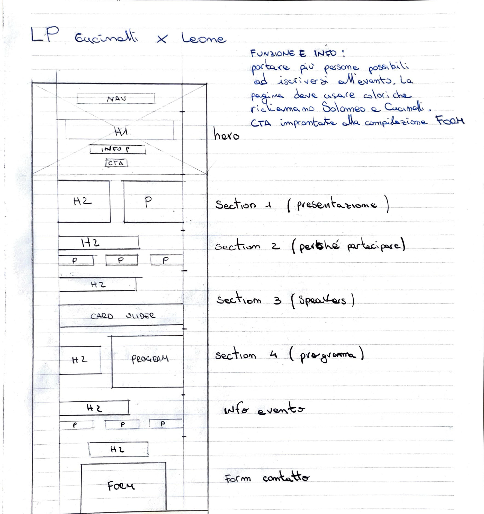


Professionisti dell'implantologia e di ambiti clinici collegati.
Leone Spa / Progetto
Lo stile italiano in implantologia
Landing page per evento clinico
Progettare una landing page evento orientata alla conversione all'interno di un linguaggio visivo esistente.
Lo stile italiano in implantologia
Tono editoriale preservato. Struttura ridisegnata per chiarezza e flusso di registrazione.
Prima la credibilità. Poi i contenuti. Il form come destinazione.
Panoramica
Progettata da zero, ma dentro un perimetro visivo chiaro.
Landing page progettata da zero per un evento clinico di implantologia di Leone Spa. Il progetto richiedeva di costruire un'esperienza completa restando coerente con il linguaggio visivo dei materiali esistenti.
Contesto
Una pagina per professionisti che arrivano con interesse, ma non ancora con abbastanza certezza.
Instagram, poster ed email erano i touchpoint più probabili del primo accesso.
Valutare rapidamente qualità dell'evento, rilevanza dei contenuti e valore del tempo investito.
Analisi
La logica dei riferimenti è venuta prima, per capire come credibilità e conversione potessero convivere.
Il progetto è iniziato osservando riferimenti editoriali simili e pattern di comunicazione vicini al tono dell'evento. L'obiettivo era capire come mantenere credibilità e coerenza visiva costruendo una pagina più guidata e orientata alla conversione.
- Landing page per eventi clinici
- Comunicazione medicale editoriale
- Materiali congressuali premium
- Quanto velocemente si capisce la proposta di valore?
- Dove compare la CTA nel flusso di lettura?
- Quanta frizione c'è prima del form?
Mantenere intatto il tono. Stringere la struttura. Rendere il percorso intenzionale.
Dall'Analisi Alla Struttura
Il flusso della pagina è stato definito prima di rifinire il linguaggio dell'interfaccia.
Il lavoro si è concentrato su gerarchia, flusso dei contenuti, leggibilità, progressione delle CTA e integrazione del form. Non sul cambiare lo stile, ma sul costruire una struttura più forte al suo interno.
Le informazioni sono state ordinate per passare dalla credibilità all'agenda, dall'agenda agli speaker, e dal valore alla registrazione, mantenendo il form come destinazione finale e non come blocco isolato.

Decisioni Chiave
Quattro decisioni hanno mantenuto la pagina leggibile, guidata e orientata alla conversione.
Mettere i segnali di qualità prima della densità informativa.
Titolo, posizionamento e valore dell'evento arrivano prima dei blocchi di contenuto più profondi.
Ripetere l'intenzione senza forzare l'azione troppo presto.
Le call to action scandiscono il percorso e diventano più forti vicino alla registrazione.
Spezzare le informazioni cliniche in unità calme e leggibili.
Agenda, speaker e contenuti di valore sono stati raggruppati per una valutazione professionale più rapida.
Il form funziona come punto di arrivo della narrazione.
La struttura costruisce prima fiducia, così l'ultimo passaggio risulta giustificato e chiaro.
Vista Finale
La landing finale mantiene il tono premium dell'evento chiarendo il percorso verso la registrazione.

Esito
Un percorso più intenzionale, senza rompere l'identità dell'evento.
Il risultato è una landing page che mantiene il tono premium dell'evento rendendo il percorso verso la conversione più chiaro, leggibile e intenzionale.